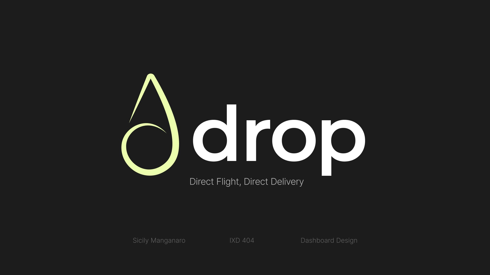
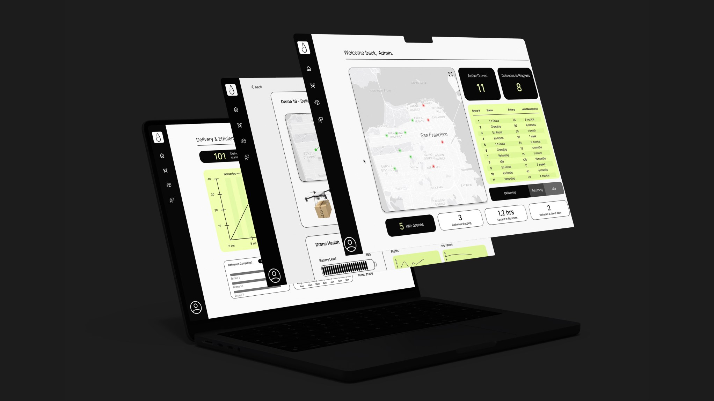
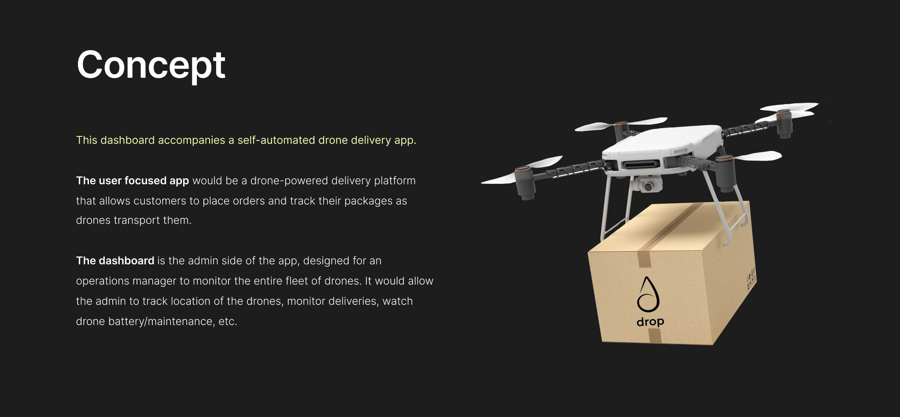
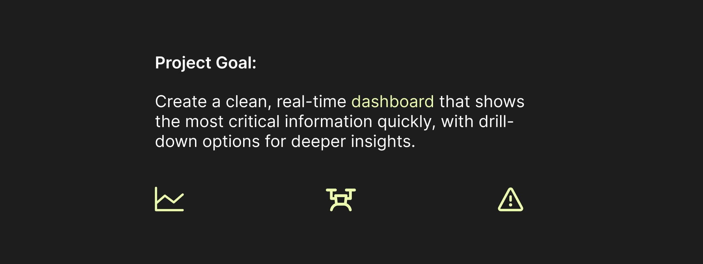
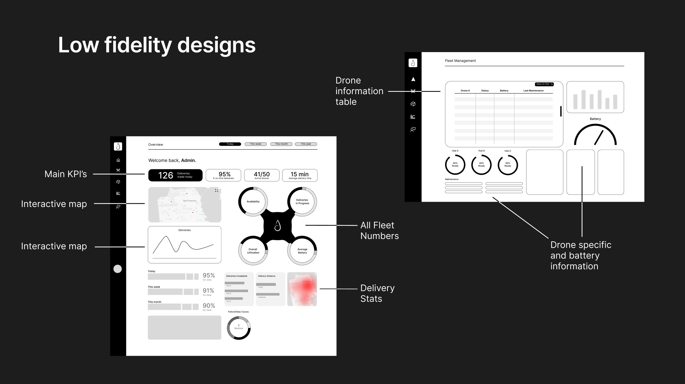
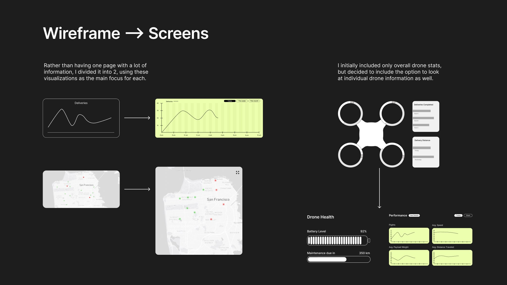
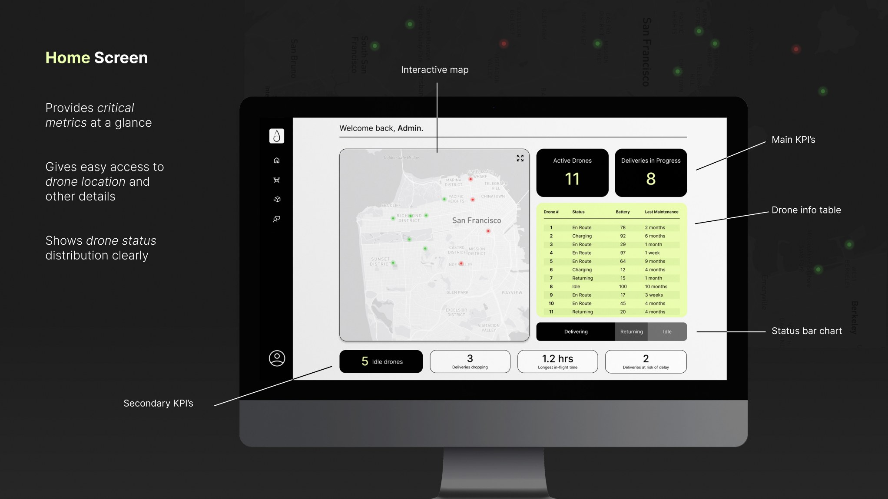
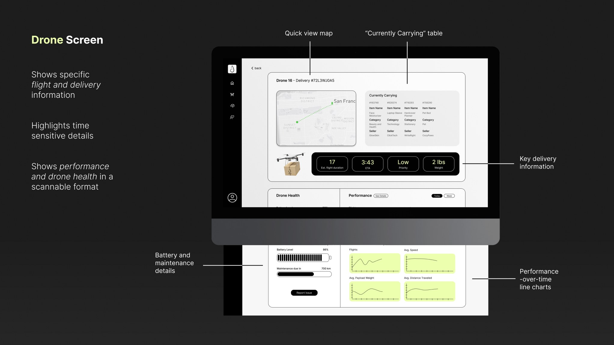
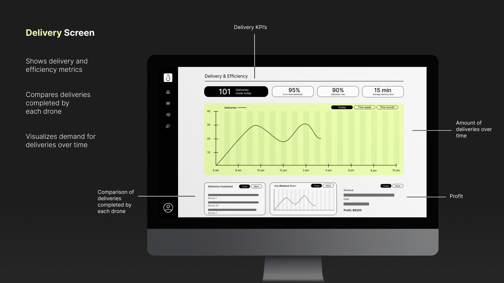

Drop Drone Delivery Dashboard
A dashboard designed to be used by the operation manager of a fleet of delivery drones. Created to provide quick insights along with in-depth information.



![The User. Persona: a drone fleet operations manager who keeps deliveries on schedule, tracks drone health, and responds quickly to delays or malfunctions. Their questions: How efficient is the fleet overall? Which deliveries are on time or delayed? Where is every drone right now and what is it carrying? Is drone performance changing over time? Are any drones low on battery or having technical issues? Quotes: I can't see the big picture of the current drone activity fast enough. It takes too long to find info on a specific drone. I wish I could quickly compare performance over time.](assets/images/drop/04-user.jpg)





